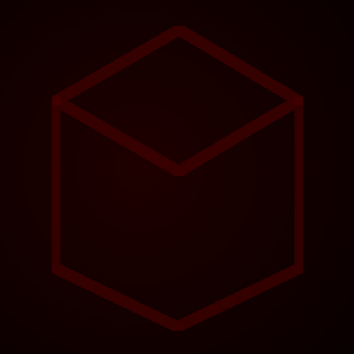
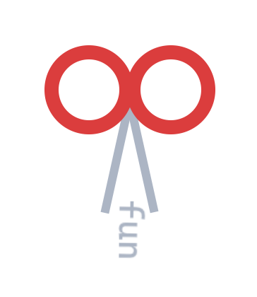

I'm trying to reshape the whole Minecraft Modding architecture;

Avoid
FuncutterI'm empowering Go with additional QoL features;
package main
func main() {
final var hello = "World!"
println ( "Hello, " + hello )
}
github.com/Olafcio1/GoPowered